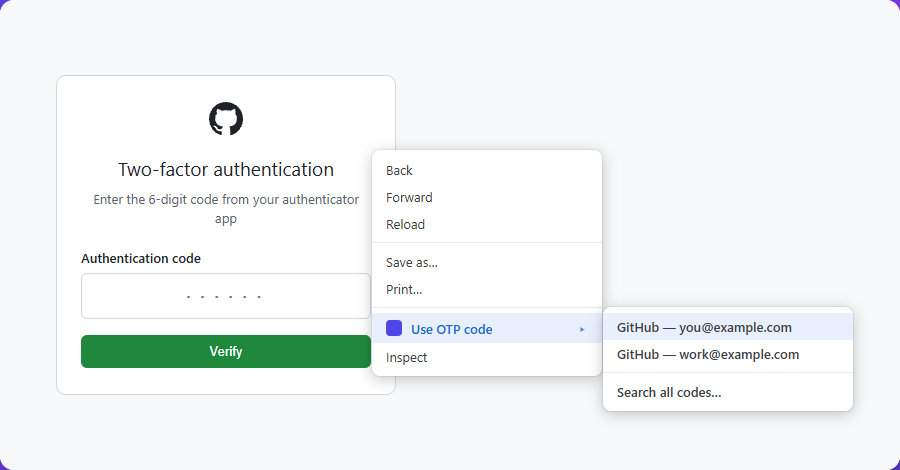
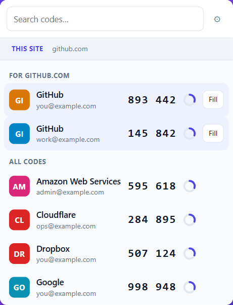
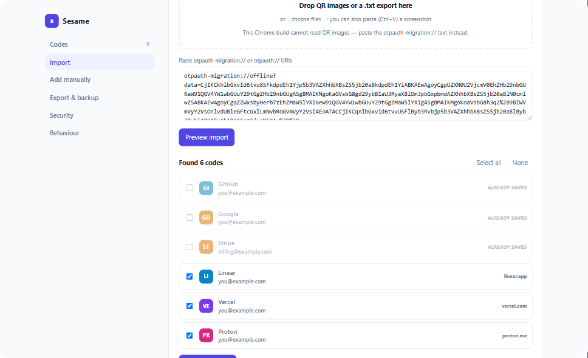
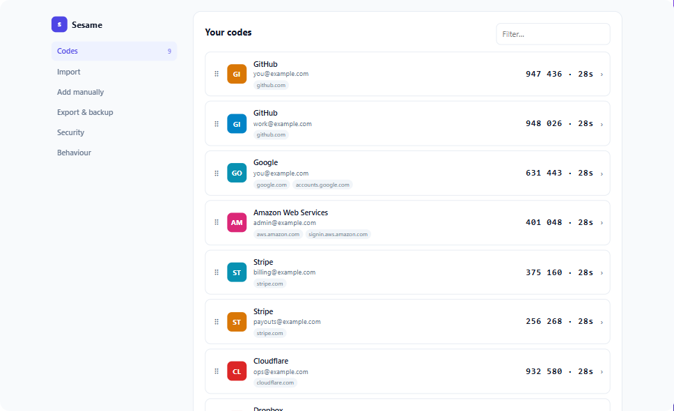

Right-click, and the code goes in
The submenu lists only the codes that belong to the site you are on.

Every code, one click away
Live codes with a countdown. The ones for the site you are on come first.

Everything else it does
A code chip on 2FA fields
Click into a one-time-code box and the right code is already waiting. One click fills it.
Keyboard shortcut
Alt+Shift+O fills the best match without touching the mouse.
Toolbar popup
Every code with a live countdown. Click to copy. Codes for the current site sort to the top.
Awkward inputs handled
Plain boxes, contenteditable fields, and the six-separate-digits widgets that break most fillers.
Optional passphrase
AES-256-GCM with a PBKDF2 key. Entered once per browser session, not once per use.
Real backups
Export back to Google Authenticator format, otpauth:// URIs, or JSON.
Move in from Google Authenticator
In Google Authenticator: ⋮ → Transfer accounts → Export accounts. Paste the
otpauth-migration:// text it encodes, or drop the QR screenshots straight in.

How a code is matched to a site
Every account carries the list of sites it may be used on.

If an account has domains, only those domains match it. A saved GitHub code is
offered on github.com and its subdomains — never on githubb.com,
github-login.com, or github.com.evil.example. Resemblance to a site's
name is never enough to pull a code onto it.
Install
Not yet on the Chrome Web Store. To run it now:
- Download or clone the repository
- Open
chrome://extensionsand turn on Developer mode - Choose Load unpacked and select the folder
The settings page opens on first install so you can bring your codes over.
What it never does
No network requests of any kind. No accounts, no sync service, no analytics, no telemetry, no third-party code. Codes are computed locally with the browser's own WebCrypto. Everything it stores stays in your browser profile.
The full details are in the privacy policy.